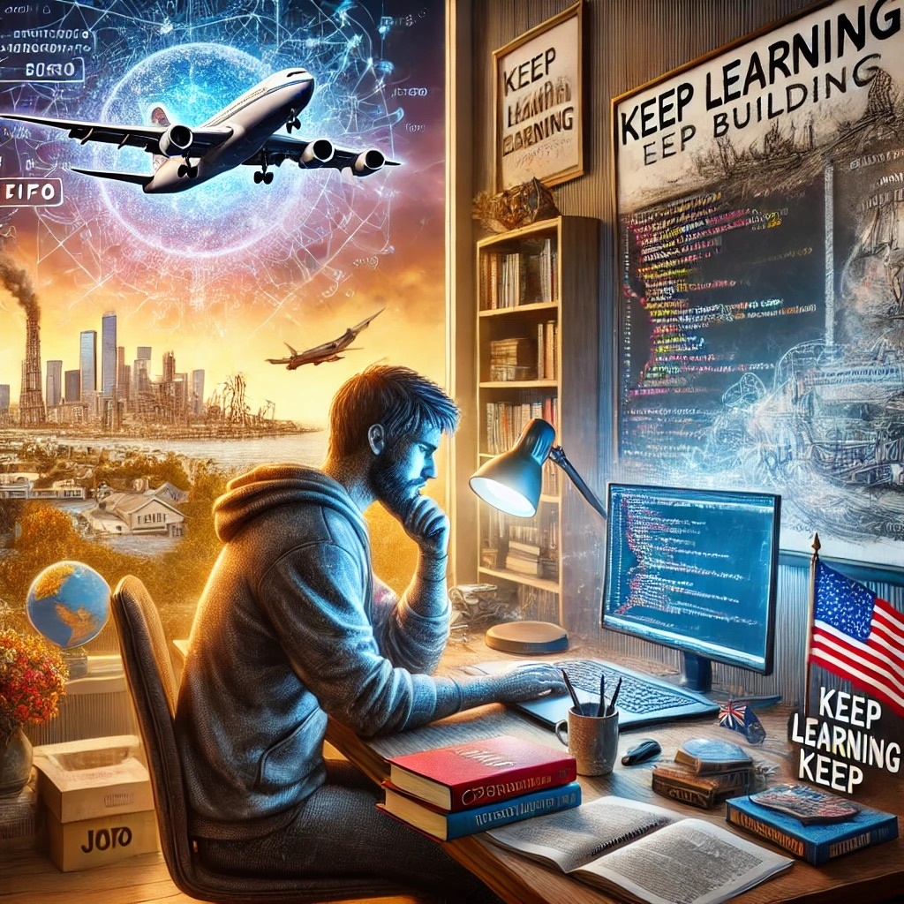
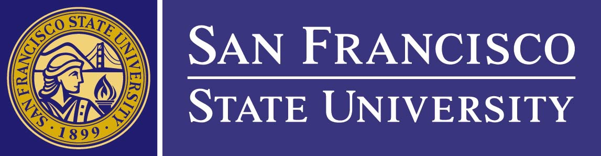

I’m Hamid Sahraye; A student, and a Co-founder with a deep passion for artificial intelligence, enterprise application development, and knowledge sharing. My goal is to master every phase of the Software Development Life Cycle (SDLC) and apply that expertise to build innovative solutions.
Beyond my professional journey, I am committed to giving back to my community by sharing my knowledge and empowering others in the tech space.
San Francisco State University.

Alameda California
| Courses | Grades | Achievements |
|---|---|---|
| UI/UX Specialization | California Institute of Arts | Honor-Student | Created enterprise level UI/UX prototypes to acquire industry best practices |
| Cybersecurity | Facebook | A | Contributed in pentesting projects, competed in capture the flag competitions, and ranked 8th in the bay-area CTF competitions |
| Company | Role | Duration | Description |
|---|---|---|---|
| Bank of the West Paribas | Desktop Support | 2022-2024 | Provided rapid technical assistance for Microsoft Windows, CISCO networking, and various platforms (Google G-Suite, VMware, Zoom, Slack, Okta), resolving customer tickets in under 25 minutes, managing hardware/software diagnostics, OS installations, mobile device support (iOS/Android), file storage solutions (OneDrive, Google Drive), remote Mac management, and inventory oversight, while ensuring minimal downtime and effective onboarding/offboarding processes. |
| San Francisco Int'l Airport | Desktop Support | 2020-2022 | Provided technical support and troubleshooting for airport staff and passengers, installing/configuring laptops, printers, and thermal printers, resolving hardware/software issues, utilizing tools like KVM switches, TeamViewer, AnyDesk, and VNC, responding to service tickets, collaborating on network infrastructure, performing system maintenance (virus scans, updates, backups), deploying specialized airport software, documenting procedures, managing IT inventory, and conducting hardware/software upgrades to ensure optimal performance and security in a fast-paced SFO International Airport environment. |
| BMO capital Bank | Desktop Support | 2018-2020 | Provided comprehensive technical support for BMO Capital Bank, managing installation, configuration, and troubleshooting of desktops, laptops, printers, and peripherals, resolving hardware/software issues, utilizing remote tools like TeamViewer and SCCM, responding to service tickets, ensuring network connectivity, performing system maintenance (updates, patches, backups), deploying and configuring banking-specific software, documenting procedures, managing IT inventory, and conducting hardware/software upgrades to maintain optimal performance and security in a high-paced financial environment. |